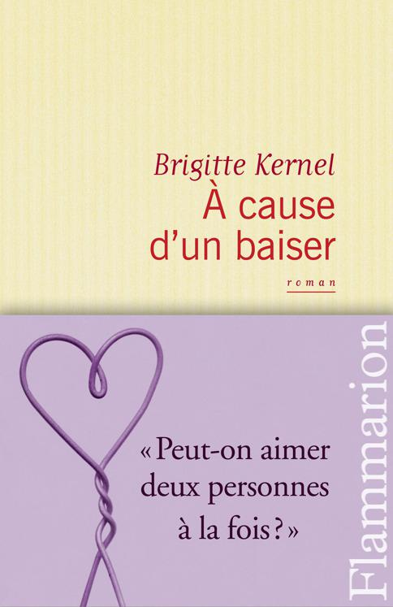

Présentation de l’éditeur :
« Elle était si parfaite, comment avais-je pu soudain aimer une autre personne ? Que deux coups de téléphone, un déjeuner, un baiser, un seul baiser et quelques caresses remettent à ce point ma vie, notre vie, en question ? Qu’est-ce qui m’avait pris de dire aussi vite à Léa : j’ai embrassé une autre femme ? La greffe avait pris, en un baiser. Un baiser qui avait duré plus de deux heures et les mains, les doigts de Marie, sous mon pull, sur ma poitrine. Il m’avait semblé que ma vie basculait. Et maintenant comment faire ? Léa, Marie ; Marie, Léa. Peut-on donc l’espace d’un court moment, ou même d’un temps plus long, aimer deux personnes à la fois ? »
Après Fais-moi oublier, le nouveau roman d’amour de Brigitte Kernel. Celui d’une femme tiraillée entre Léa, celle qu’elle aime, et l’envoûtante Marie qui, en un baiser, vient tout bouleverser.
Couverture : © Studio Flammarion
Portrait de Brigitte Kernel par David Ignaszewski-koboy © Flammarion |  |